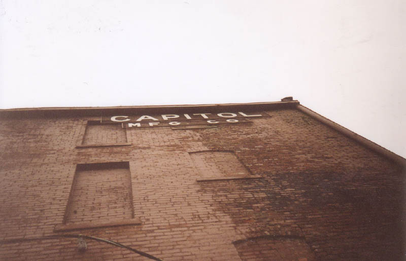
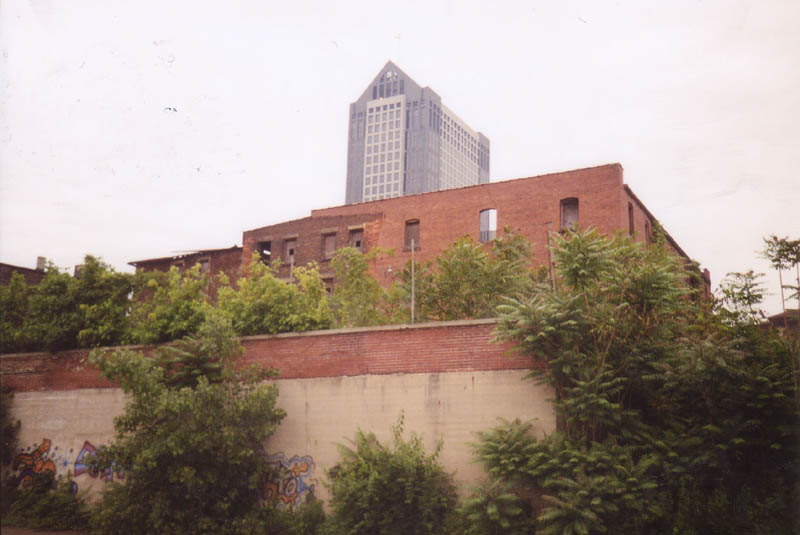
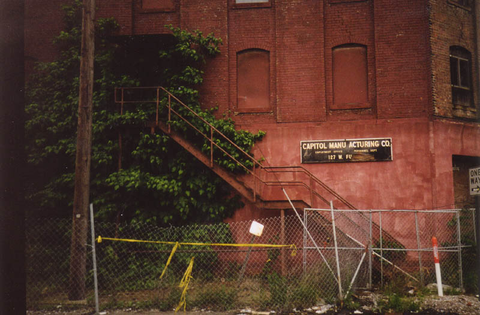
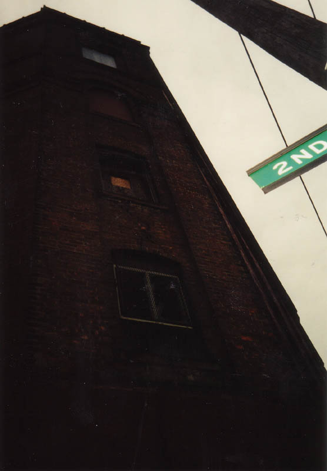
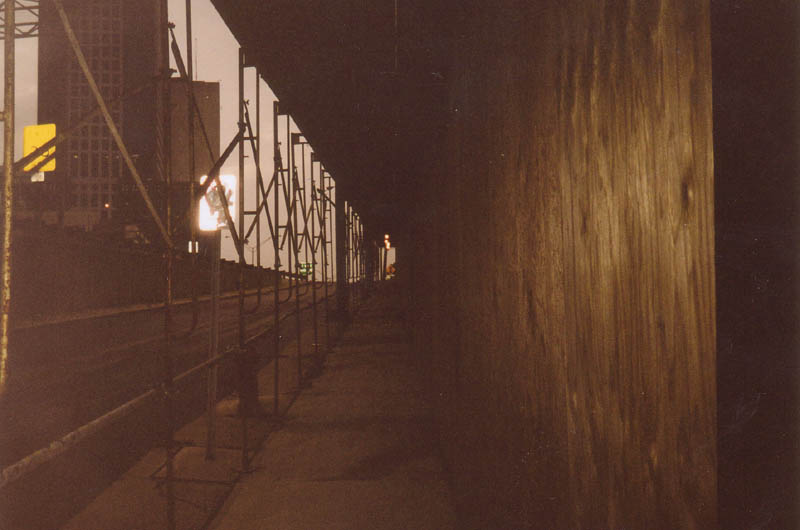
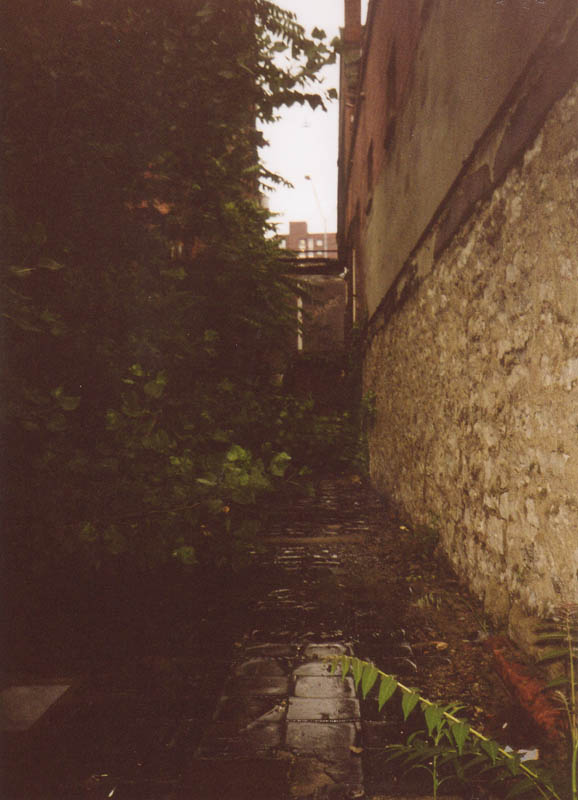

If you live on the west side and take I-70 into downtown Columbus--and your life hasn't depressed you to the point where you don't look at anything but the road--you've seen the Capitol Manufacturing plant. It stands right beside the freeway on the south side, in the Brewery District. A huge brick factory with several huge wings, it's one of the most prominent neglected buildings in Columbus. Capitol represents the last of the abandoned Brewery District buildings. At the peak of the Reagan era, the Brewery District was full of them, including the tall octagonal smokestack with trees growing out of the top. Today the buildings have all been cleaned up, gutted, and rebuilt as modern office buildings or retail outlets. That even includes Capitol now; it's an office building with insurance companies and advertising agencies occupying it.

Capitol Manufacturing, Inc. is still a functioning company headquartered in Westerville. They maufacture pipes and pipe fittings, and have a huge plant on Route 40 just west of West Jefferson. But the Brewery District division of their operation hasn't been fully operational since about 1970. It was closed bit by bit over twenty years, finally being completely shuttered in 1993. The buildings themselves are more than a hundred years old.

This one had been on my list for some time. With Rookie's new grownup job he hasn't been able to get out and do much exploring, so when he found time in early June we decided to try for a big place. Capitol is one of the biggest.

There used to be thirteen buildings in the Capitol complex. Today all but three have fallen to demolition. They're all connected but independent. The building which faces I-70 goes up four floors, but the one behind it is built even higher.

This was probably the toughest building to get into we've ever run across. First of all, it's surrounded by a chainlink fence. When we thought we saw an open doorway around back we managed to hop the fence, only to be stopped by the fact that every single door was actually welded shut. They're really devoted to keeping homeless people out--and people like us, I suppose.
But, in the end, we made it in. We boosted ourselves onto a narrow section of roof which connects two of the buildings and climbed through a window. To see the inside of Capitol, click below.
UPDATE: The Capitol Mfg. building is long gone. It was a casualty of the Brewery District renovations in the very early 2000s. Fun though it was, I can't say it shouldn't have come down.

Click To Enter Capitol Manufacturing
Illicit Ohio: Capitol Manufacturing
Back
forgottenohio@yahoo.com
facebook.com/andy.henderson.319